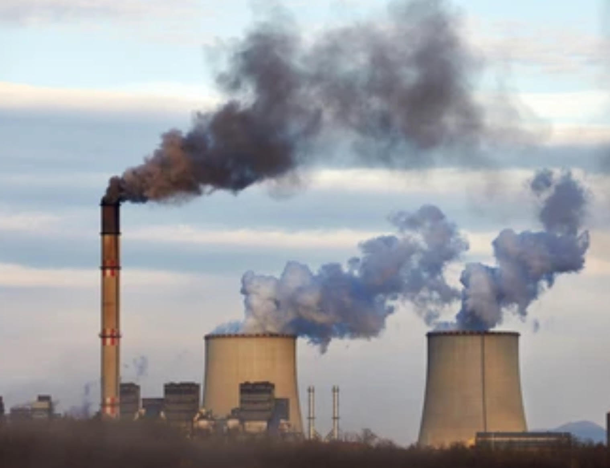
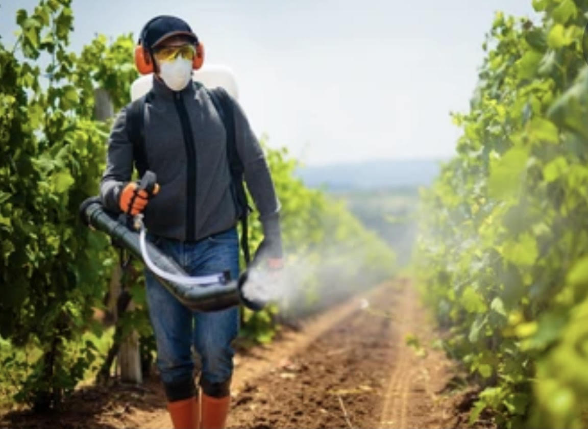

Holocene Heroes
Homepage
What is a Mass Extinction?
Notable Species: Bee
Notable Species: Tiger
How We Can Help
How We Can Help
Now that you have an idea of the plights some animals have amidst the Holocene extinction, let’s look at some tips from the Animal Welfare Society (n.d.) on how we can help them:


Practice the 3Rs (reduce, reuse, recycle). This reduces the amount of trash we produce.
Many energy sources rely on processes that involve coal and fossil fuels, emitting greenhouse gases. As such, considering energy sources that don’t mitigates these gases. Otherwise, saving energy by using it only when necessary will go a long way as well.
Leave wild animals alone; don’t go near them or remove them from their habitats. This keeps them safe. If you see and injured animal; however, call the appropriate authorities.
Buy energy efficient and durable products made from and packaged by sustainable materials. Avoid products that have been tested on animals or have animal parts in them.
Never purchase exotic animals or any products or food made from wildlife.
Pesticides, herbicides, and other related chemicals poison wildlife. Refrain from using them.
Light pollution has negative repercussions on wildlife. Use light only when necessary.
Learn more about native endangered species and spread this knowledge to friends and family.
Support organizations that work to protect wildlife. Encourage authorities to take action for the sake of these animals.
'
Hopefully, this website will inspire you to take action and be a Holocene Hero!
 Holocene Heroes
Holocene Heroes